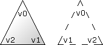

Hilfe

Parameter
| surface% | Identität einer Gitteroberfläche (surface) |
| v0% | Index eines Vertex (siehe ADDVERTEX) |
| v1% | Index eines Vertex (siehe ADDVERTEX) |
| v2% | Index eines Vertex (siehe ADDVERTEX) |
Rückgabewert
Es wird eine Indexnummer des Dreiecks zurückgeliefert.
Beschreibung
Die Funktion AddTriangle fügt ein Dreieck (triangle) zu einer Oberfläche (surface) hinzu. Dabei wird die Indexnummer des Dreiecks zurückgeliefert (ab 0).
Die v0%-, v1%- und v2%-Parameter sind Indexnummern, die von AddVertex zurükgegeben werden.
zurükgegeben werden.
Abhängig von der Anordnung der Ecken wird ein Dreieck nur von bestimmter Seite sichtbar. Ein Dreieck hat drei Punkte, die durch Vertex definiert werden. Die Vertexpunkte werden miteinander verbunden v0 bis v2. Ist die Reihenfolge der Punkte im Uhrzeigersinn (relativ zum Betrachter), so ist ein Dreieck sichtbar. Ist die Reihenfolge gegen den Uhrzeigersinn, so bleibt ein Dreieck unsichtbar.

Der Grund für die sichtbaren Dreiecke liegt auf der Hand: Dadurch wird die Anzahl der Dreiecke deutlich reduziert. Zudem wird somit nur die Seite gerendert, die auch tatsächlich sichtbar sein kann. Falls ein Dreieck von beiden Seiten sichtbar sein soll, dann muss man nur zwei Dreiecke erstellen (wobei ein Vertex mit dem anderen vertauscht ist) - benutze auch CopyEntity
oder FlipMesh.
Beispiel
Standardbeispiel:
SetBuffer BackBuffer()
camera = CreateCamera()
light = CreateLight()
PositionEntity camera, 0, 0, -5
RotateEntity light, 90, 0, 0
brush = CreateBrush(0, 255, 0)
mesh = CreateMesh()
surface = CreateSurface(mesh ,brush)
v0 = AddVertex(surface, 0, 0, 0)
v1 = AddVertex(surface, 1, -1, 0)
v2 = AddVertex(surface, -1, -1, 0)
AddTriangle(surface, v0, v1, v2)
UpdateNormals mesh
While Not KeyHit(1)
RenderWorld
Flip
Wend
End
Siehe auch
AddVertex, CreateMesh, CreateSurface, UpdateNormals, ClearSurface